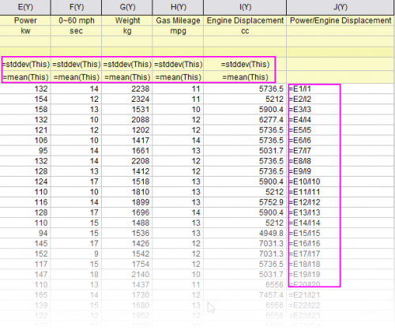

列/セル値の設定
SetColVal
概要
Originは、列値または行列値を計算するいくつかの方法があります。Originの最も強力な機能の1つは列値の設定で、一般にワークブックまたは行列に格納されている値に対して数学演算を実行するためのツールです。これらの操作では、Originの組み込み関数、カスタムOrigin C関数、Python関数、数学演算子と論理演算子、組み込み変数またはユーザー定義変数を利用でき、入力データの前処理も可能です。
このチュートリアルでは、次の方法でセルまたは列の値を計算する方法を説明します。
- 等差級数で列値を入力する
- 組み込み関数を使用する
- その他の列値を使用する
- セル値を使用する
- ワークブックのメタデータの変数を使用する
さらに、次のことを学びます。
- ワークシートのセルに数式を入力してセル値を計算する方法
- セル値の自動設定
列値の設定
等差級数で列値を入力する
Originには、列を算術級数で満たす複数の方法が用意されています。
オートフィルを使用する
- セルにいくつかの開始値を入力します。
- 2つのセルを選択します。
- マウスを2番目のセルの右下隅に移動します。マウスカーソルの形状が"+"に変わります。
- マウスを列の下にドラッグします。列に 1, 3, 5, 7 のように入力されます。.
 | 右側にドラッグすることで行を自動入力することもできます。さらに、セル値のシーケンスを他の列または行のセルにコピーするには、Shiftキーを押しながら目的のシーケンスを選択し、Ctrlキーを押しながらドラッグします。
|
数字のセットで埋めるを使用する
- 列Bを選択して、列値の一律設定：数字のセットを選択し、PatternN ダイアログを開きます
- スケールの開始を1にし、終了を23に変更します。増分 を2にします。
-
- OKボタンをクリックすると、列Bに 1, 3, 5, 7..., 23 のように入力されます。
他の列を使用する
ここでは、どのようにF(x) 行に式を入力し、列の値を設定するかをご説明します。
- 新しいワークブックを作成します。 \Samples\Data Manipulation\ フォルダからUS Metropolitan Area Population.datファイルをインポートします。
- ワークシートに新しい列を追加します(ワークシートの最後の列の右側で右クリックし、コンテキストメニューから新しい列の追加を選びます。)。 列のロングネームを"Population/Sq.Mi."にMi.を選びます。
- 人口密度を計算には、A/BをE列のF(x) 行に入力します。
- 他の2列からのデータを使って、列が計算されます。
組み込み関数を使用する
- 新しいワークブックを作成します。 \Samples\Signal Processing\フォルダから Step Signal with Random Noise.dat をインポートし、B列の移動平均、B列のポイントのある前後サンプルから平均を計算します。
- 標準ツールバーにある列の追加ボタン
 をクリックして新しい列Cを追加します。この列を選択して右クリックし、列値の設定をクリックして、値の設定ダイアログを開きます。
をクリックして新しい列Cを追加します。この列を選択して右クリックし、列値の設定をクリックして、値の設定ダイアログを開きます。
- 値の設定ダイアログで関数の検索と挿入ボタン
 をクリックしてキーワード「adjacent average」を検索します。
をクリックしてキーワード「adjacent average」を検索します。
- 関数名であるMovavg(vd,back,forward)をダブルクリックして値の設定ダイアログに挿入し、開いている「関数の検索と挿入」ダイアログを閉じます。
- vdをハイライトして選択します。 vdの文字を選択して、vd を Bに変更し、back を0 、forward を 2に変更します。 数式は次のようになります：
- OKをクリックします。 最後の列に列Bの移動平均の値が出力されます。
| 同じワークシート内の別の列を参照する場合は、インデックス（例：col（1））、ショートネーム（Aまたはcol（A）など）、またはロングネーム（例："signal with noise"など ）を使用して列を識別します。
|
他のシートの列を使用する
列値の設定ダイアログボックスには、他のブック/シートを指定するための範囲変数を簡単に挿入できる変数メニューがあり、他のブック/シートを現在の列の値の計算に使用することができます。
- プロジェクトファイル Samples\Data Manipulation\Setting Column Values.OPJ を開き、Columns from Other Sheets サブフォルダを開きます。
- シートSampleを右クリックし、「データなしで複製」を選択します。 （現在の名前をダブルクリックすることで）複製したシートの名前をCorrected Sample.のように変更します。
- これらの3つの列には、他のシートの列を参照する数式に基づくデータを入力します。 最初の列を選択して右クリックし、列値の設定を選んでダイアログを開きます。変数：選択から範囲変数を追加を選択し、ワークシートから選択するダイアログを開きます。ワークシート内のある範囲を直接選択すれば、実行前の処理スクリプトパネルで範囲変数として定義し、使用することができます。
- ワークシートから選択ダイアログが開き、Sampleシートがアクティブにして、A列を選択し
 ボタンをクリックします。入力モードダイアログが開くのでOKをクリックして戻ります。
ボタンをクリックします。入力モードダイアログが開くのでOKをクリックして戻ります。
- 「range r1 = Sample!Col(A);」が自動的に実行前の処理スクリプトに挿入されます。次のように式を編集します。
range rTime = Sample!Col(A);
- そして、列の計算式に rTime と入力し、OKボタンをクリックすると、1列目のデータを作成します。
- Corrected Sampleワークシートで、列Bと列Cを強調表示し、右クリックします。ショートカットメニューから、複数列の値を設定を選択してダイアログを開きます。そして変数：選択から範囲変数を追加を選択し、2つの変数（SampleシートとReferenceシートのB列）を実行前の処理スクリプトに挿入します。これらの新しいエントリを次のように編集します。
range rSample = Sample!Col(B);
および、
range rRef = Reference!Col(B);
- では、実行前の処理スクリプトにある範囲変数(range)を編集し、別の計算式で同じ結果が得られるようにしてみましょう。2つの範囲変数にある列名Col(B)を消去し、両方の行で、 変数: 事前定義変数: wcol(_ThisNumCol) を選択し、次のようにします。
range rSample = Sample!wcol(_ThisColNum);
range rRef = Reference!wcol(_ThisColNum);
- そして、列の計算式ボックスに次の式を入力します。
rSample - (rSample[1] - rRef[1])
- OKボタンをクリックし、Corrected Sample ワークシートのB列とC列のデータを生成します。

| - 角括弧を使って特定のセルを参照できます。上記の計算式にある[1]は、最初のセルということです。
- 値の設定ダイアログのメニューで計算式：保存と計算式：ロードを選択すると、式を保存して他の列に新しいデータを生成する際にリロードして使用できます。
|
セル値を使用する
特定のワークシート・セルに含まれている値を参照し、列値を設定するための計算式の計算に使用できます。これにより、列内の値を更新するための制御セルとしてワークシート・セルを使用する簡単な方法が提供されます。
- プロジェクトファイル Samples\Data Manipulation\Setting Column Values.OPJ を開き、Cells in a Worksheet サブフォルダを開きます。
- C列を右クリックし、列値の設定 ...コンテキストメニューを選択して列値の設定ダイアログを表示します。
- 変数：選択から範囲変数を追加メニューを使って、ワークシートから選択ダイアログを開きます。列G(Value)をこのワークシートから選択してをクリックします。
表示される入力モードダイアログでOKをクリックすると、実行前処理スクリプトに自動的に表示されます。
- 実行前の処理スクリプトパネルで、範囲変数(range)の名前を rControl に変更し、いくつか行を追加して、次のようなスクリプトにします。
range rControl = Col(G); //range r1 = Col(7); int nOrder = rControl[2]; int nPoints = rControl[3]; differentiate -se iy:=(1,2) order:=1 smooth:=1 poly:=nOrder npts:=nPoints oy:=(1,3);
スクリプトは、Xファンクションdifferentiate を呼び、多項式の次数およびポイント数に対する引数として、列Gのセル値を渡します。これは微分を実行中に実行されるSavitzky-Golayスムージングを制御するものです。
- 値の設定ダイアログは次のように設定されます。
- OKをクリックしてダイアログを閉じ、列Cの結果を確認しましょう。列Gの値を変更して出力を変えてみてください。
Note: 多項式の次数は1から9までです。
| ワークシートに表示されたグラフが最初に作成され、セルのグループを統合してワークシートに埋め込まれました。
|
ワークブックのメタデータの変数を使用する
インポートウィザードを使用してデータをインポートするときに保存された変数や、ワークブックに保存されているメタデータを参照して、列の値を計算することができます。
- \Samples\Data Manipulation\Setting Column Values.OPJを開くか、そのまま作業を続け、プロジェクトエクスプローラで Worksheet Metadata サブフォルダに移動します。
- 列Aを選択し、右クリックして挿入メニューオプションを選択します。 列Aの左側に新しい列が挿入されます。
- 最初の列（この新しく挿入された列）を選択し、右クリックします。そして、列値の設定メニューを選択し、値の設定ダイアログを開きます。
- 変数：変数情報の追加を選択し、変数の挿入ダイアログを開きます。変数タイプドロップダウンリストから 数値(int) を選択します。USER.VARIABLESノードを広げます。NUMBEROFPOINTS行をクリックして選択し、値を3800に設定します。挿入ボタンをクリックして、実行前の処理スクリプトパネルに変数を挿入します。
- 次に、変数タイプを数値(double)に設定します。Shiftキーを押しながら、StartFrequencyKHzおよびStepFrequencyKHzの両方を選択し、挿入ボタンを押しこれら2つの変数を挿入します。閉じるボタンをクリックしてダイアログを閉じます。
- 上部の列式パネルで、{d1:d2:d1+(n1-1)*d2}を入力し、OKボタンを押してデータを生成し、ダイアログを閉じます。 列には度数が入力されます。
- 1列・2列目を選択し、右クリックして列XY属性の設定：XYYと選択し、それぞれの列の属性をXとYに変更します。1列目のロングネームをFrequencyに変更するとワークシートは次のようになります。
セル値の設定
セル編集モードでは、以下のように、セル（データセルまたはユーザー定義パラメータ行セル）に等号 "="で始まるセル数式を入力できます。
数式を入力すると、編集モードを終了（インプレース編集または編集: 編集モード）して、結果のセル値を表示します。
Originでセル式がどのように機能するかを例を挙げて説明しましょう：
- 新しいワークブックを開きます。
- <Origin Program Folder>Samples\Statisticsフォルダにあるサンプルデータ "automobile2.dat"をワークブックにインポートします。
- ヘッダ行にある "F（x）="セルを右クリックし、コンテキストメニューからユーザパラメータを追加を選択してユーザパラメータを追加します
- ここでは、2つのユーザパラメータを追加し、それらのパラメータ名としてMean と Std Devを別々に入力しましょう。 次に、このワークシートの最後にもう1列を追加し、ロングネームに列としてPower/Engine Displacementと入力します。
- 編集：編集モードを選択すると、編集モードに切り替わります。そして、セルのMeanとPower列のStd Devに、それぞれ=mean(This) と= stddev(this)を入力します。編集が完了したら、セルの外側をクリックしてセル編集モードを終了し、編集：編集モードメニュー項目を再度選択して、セル式の結果を表示します。
| Note: 変数"This"の意味については、こちらのページをご参照ください。
|
- "Power」列のMeanセルのクリックして選択し、このセルの右下隅にカーソルを合わせます。カーソルが十字+に変わったら、この "+"ハンドルをつかんでマウスで水平方向に列 "Engine Displacement"までドラッグします。カーソルを離すと、この行の他のセルがいくつかの結果値で満たされることがわかります。あるいは、「+」ハンドルをダブルクリックして、式を列(Power)の右側にあるすべてのMeanにコピーすることもできます。
- これらのMeanセルをダブルクリックすると、同じ式で全て入力されています。=mean(this)

- 標準偏差を計算するには、Std Dev行で同じことを行います。
- 先ほど追加した最後の列に移動し、最初のセルに=E1/I1と入力します。
| Note:ここで、E1はcol（E）の最初のセルを意味し、I1はcol（I）の最初のセルを意味します。この式については、こちらのページをご参照ください。
|
- カーソルを離して割り算を実行します。ステップ6と同じ方法で、この "+"ハンドルをつかんで、この列の最後のセルにマウスで垂直方向にドラッグします（ヒント：セルの右下にマウスポインタを置いた場合、 カーソルが「+」記号に変わります。この「+」記号が表示されたら、ダブルクリックして数式を列の最後まで拡張します。（これはマウスでドラッグするよりも速くて簡単です）
- カーソルを離して、各行でcol(E)/col(I)のすべての除算結果を取得します。
編集：編集モードメニューを選択すると、これらのセル式をすべて確認および編集できます。
